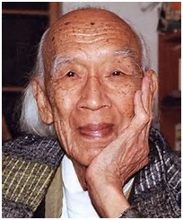

Nom de naissance: Ngô Văn Xuyết
Naissance: 1913. Indochine
Décès: 1er janvier 2005. France
Pays de résidence: Viêt Nam, France
Profession:ouvrier, écrivain
Ngô Văn, né en 1913 près de Saigon et mort à Paris le 1er janvier 2005[1], de son nom complet Ngô Văn Xuyết, était un écrivain communiste vietnamien. (Quatrième Internationale)
Militant anticolonialiste et communiste internationaliste, il fut pourchassé par le pouvoir colonial puis par le pouvoir stalinien. Né dans le village de Tan Lo, près de Saigon, Ngô Văn participa, à partir des années 1920, à la lutte anticoloniale dans les rangs du mouvement trotskiste, qui, contrairement aux staliniens dirigés depuis Moscou par Ho chi Minh, accordait plus d'importance au combat de classe qu'au combat nationaliste. Après 1945, les trotskistes vietnamiens, qui avaient acquis une certaine importance, furent massacrés par les staliniens.
Ngô Văn a décrit le Viêt Nam de sa jeunesse dans Viêt Nam 1920-1945. Révolution et contre-révolution sous le domination coloniale, et a relaté sa vie militante et mouvementée en Indochine dans Au pays de la cloche fêlée, tribulations d'un Cochinchinois à l'époque coloniale. Il y évoque son enfance, ses activités de militants et sa rencontre avec Nguyễn An Ninh, comme lui militant anticolonialiste et créateur du journal La Cloche fêlée qui parut de 1923 à 1926 à Saigon, et dont le titre évoquait le poème de Baudelaire sur le mal-être.
Réfugié en France en 1948, il devient ouvrier électricien chez Simca à Nanterre, puis connaît perses tribulations qu'il conte dans Au pays d'Héloïse, avant de travailler comme technicien chez Jeumont-Schneider, tout en écrivant et en militant avec Maximilien Rubel au sein du Groupe Communiste de Conseils et à Informations et correspondances ouvrières, puis à Échanges et mouvement.
Ngô Văn est diplômé de l'École des hautes études et est docteur en histoire des religions.

NGÔ VĂN
1913-2005
Bách khoa toàn thư mở Wikipedia
Ngô Văn
Sinh năm: 1913. Tân Lộ, gần Sài Gòn
Mất 1 tháng 1 năm 2005, Paris, Pháp
Dân tộc: Kinh
Nghề nghiệp nhà văn, nhà hoạt động chính trị.
Website: http://chatquipeche.free.fr/
Ngô Văn Xuyết 1913-1 tháng 1 năm 2005 hay còn gọi dưới bí danh là Ngô Văn, trước 1948 ông là một trong những nhà Cách Mạng Trotskyist người Việt trong Phong Trào Đệ Tứ Quốc Tế ở Việt Nam nói riêng và trong phong trào cộng sản tại Đông Dương nói chung. Ngô Văn còn được biết đến là một nhà văn Việt Nam Trotskyist tại Pháp với nhiều tác phẩm về lịch sử phong trào cách mạng Việt Nam trước 1945(1). Khi Việt Minh đàn áp phong trào Đệ Tứ, cuối cùng sau năm 1948 thì ông đã lưu vong sang Pháp, ở đây ông tiếp tục viết về cuộc đời mình và phong trào cách mạng mà thời trẻ ông tham gia và hoạt động (2),(3)
Trong thời gian ở bên Pháp, Ngô Văn đã trở thành một người xu hướng Mác-xít tuyệt đối tự do (libertarian marxist), thậm chí còn tốt hơn so với những người vô chính phủ cộng sản bình thường và ‘’cổ điển’’ (anarcho-communist)...
Ông là mộtngười cấp tiến độc lập trong các truyền thống chủ nghĩa cộng sản hội đồng công nhân cách mạng (council-communism), và đồng thời Ngô Văn có những quan hệ thân thiện với nhiều nhà cách mạng nổi tiếng như Maximilien Rubel, Henri Simon,Claude Lefortv.v...(4) trong nhóm Socialisme ou Barbarie, ICO (Informations correspondance ouvrièrs), Échanges et mouvement, và cũng đã từng hợp tác với những người thuộc nhóm Quốc Tế Tình Huống (Situationist International) như Guy Debord và đặc biệt là Ken Knabb.(5)
Sinh trưởng và hoạt động cách mạng
Ngô Văn Xuyết sinh năm 1913 ở Tân Lộ, một nơi gần Sài Gòn. Năm 14 tuổi ông đã rời làng của mình vào Sài Gòn để làm việc ở một nhà máy sắt thép và vừa đi học. Ở Sài Gòn, ông đã bắt đầu tham gia phong trào công nhân như đình công và biểu tình chống lại thực dân Pháp, các phong trào biểu tình đòi tự do hội họp, thành lập báo chí, giáo dục và tự do đi lại. Các phong trào này thường bị thực dân Pháp đàn áp rất ác liệt và những người lãnh đạo phong trào thường bị đày ra Côn Đảo.
Bởi vì tham gia các phong trào trên nên ông đã bị buộc thôi học tại trường. Nhưng do sử dụng tên giả nên Ngô Văn hay lui vào thư viện Sài Gòn, ở đó ông đã bắt đầu tiếp xúc với các sách vở và tài liệu chủ nghĩa Marx. Cũng chính nơi này ông đã bắt đầu gặp gỡ và tham gia vào các nhóm Trotkyist ở Sài Gòn và giao lưu quen biết với các thành viên của đảng cộng sản Đông Dương. Quan điểm Ngô Văn luôn nhấn mạnh tầm quan trọng của phong trào công nhân chứ không phải trên tinh thần dân tộc như Nguyễn ái Quốc.
Ở Sài Gòn, các nhóm Trotskyist và Stalinist đã hợp tác với nhau trong ba năm (1933-1936), cả hai phe đã thống nhất với nhau trên một mặt trận là tờ báo pháp lý La Lutte bằng tiếng Pháp, do luật của thực dân Pháp lúc đó là cấm xuất bản các ấn phẩm báo chí bằng tiếng Quốc Ngữ. Sau đó những ứng cử viên phong trào Đệ Tứ ở Việt Nam đã được bầu vào Hội Đồng Thành Phố, đây là một trong những thắng lợi lớn lao của phong trào Đệ Tứ ở Việt Nam lúc bấy giờ. Nhưng sau khi chính phủ Pháp ký với lãnh đạo Stalin của Liên Sô vào tháng 5.1935. Thì người Pháp và đảng cộng sản Pháp đã không ủng hộ cho phong trào giải phóng thuộc địa ở Đông Dương nữa. Vào lúc này Nhóm Tháng Mười đang được Hồ Hữu Tường lãnh đạo. Ngô Văn và một số đồng chí khác của mình đã thành lập ‘’Liên đoàn quốc tế cộng sản’’ của Phong Trào Đệ Tứ Quốc Tế. Khi nhiều thành viên Trotskyist vẫn đang tham gia La Lutte, thì Ngô Văn đã âm thầm tách riêng ra thành lập nhóm mới của mình.
Ngô Văn đã tổ chức một cuộc biểu tình đòi tăng lương ở nhà máy mình làm việc cùng với các công nhân trong xưởng. Theo luật của thực dân Pháp thời bấy giờ thì tụ tập quá 19 người là phạm pháp nên thực dân Pháp đã ra tay đàn áp, nhiều bạn bè của Ngô Văn bị bắt và tra tấn, nhưng lần đó Ngô Văn đã thoát được dù là người phát ngôn chính.
Tù nhân và lưu đày
Vào năm 24 tuổi, Ngô Văn bị bắt giữ trong kho của một nhà máy, tại nơi này ông đã giấu rất nhiều tài liệu cách mạng từ nước ngoài ở dưới lòng đất và cũng là nơi ông cùng các đồng chí của mình thảo luận kế sách chống thực dân Pháp. Ngô Văn đã bị giam và tra tấn trong Khám Lớn Sài Gòn. Ở đây nhiều thành viên Trotskyist và Stalinist bị giam chung với nhau, hai bên luôn đề phòng nhau. Nhưng để tránh gây sơ hở với kẻ thù chung là thực dân Pháp, ông đã cùng mọi người tham gia tuyệt thực để đòi những quyền lợi cho tù nhân chính trị.
Vào năm 1937 nhận chỉ thị từ Moscow, những thành viên thuộc phe Stalinist trong tờ báo La Lutte đã tách ra và công kích những người Trotskyist là thông đồng với phát xít.
Ngô Văn và các đồng chí của ông đã nhiều lần bị ngồi tù và tra tấn rồi lại được thả ra. Đã có lần ông bị bắt giam tám tháng chỉ vì một bức thư giới thiệu cuốn sách của Lev Trotsky cho người bạn, và lời hỏi thăm đến lãnh tụ Trotskyist bấy giờ là Tạ Thu Thâu. Ông cũng đã từng bị lưu đày đến Trà Vinh, tại một hòn đảo ở đồng bằng sông Cửu Long. Cuối năm 1940, một cuộc nổi dậy của nông dân đã nổ ra ở các Tỉnh miền Tây Nam Kỳ. Gần 6.000 người bị bắt, hơn 200 người bị hành quyết công khai, và ngàn người khác bị chết vì bom đạn bởi chính quyền Vichy. Vào trong khoảng thời gian này ông được phát hiện mắc bệnh lao.
Tháng 3 năm 1945, quân đội Nhật vào Sài Gòn và thiết quân luật ở đây. Các lực lượng phe Đồng Minh đã ném bom Sài Gòn. Miền Bắc Việt Nam bấy giờ bị kiểm soát bởi Việt Minh. Những người Việt Minh chủ trương liên kết với các đảng phái khác và hợp tác với các nước Đồng Minh như là con đường giải phóng dân tộc. Nhưng những người Trotskyist phản đối đường lối này, xem chuyện này như là một điều ảo tưởng, và đã kêu gọi công nhân nổi dậy chống lại sự áp bức của Đế Quốc và mọi thế lực khác. Ngô Văn và các đồng chí của ông đã rất vui mừng và phấn khởi khi hơn 30.000 người công nhân mỏ ở Hòn Gai-Cẩm Phả đã bầu ra thành lập một hội đồng giữa các thợ mỏ để tổ chức chiến dịch xóa mù chữ, tham gia vào phong trào cách mạng.
Sau những cuộc càn quét của Việt Minh, ông chạy trốn khỏi Việt Nam và sang Pháp lưu vong năm 1948. Ở Pháp ông viết sách về những gì xảy ra từ thập niên 1920, qua giai đoạn Mặt Trận Bình Dân và Cách Mạng Tháng Tám ở Việt Nam. Bà Hilary Horrocks ở Edinburgh, Vương Quốc Anh là người đang dịch hồi ký của ông Ngô Văn sang tiếng Anh, cho biết tác phẩm của ông Ngô Văn có giá trị lịch sử lớn và được viết với ngòi bút đầy hình ảnh.(3)
Từ khi rời khỏi Đông Dương năm 1948, nếu hy vọng và niềm tin về sự cần thiết phải lật đổ một trật tự thế giới ti tiện không bao giờ rời khỏi Ngô Văn, thì nó cũng nuôi dưỡng trong Ngô Văn những suy nghĩ mới về chủ nghĩa Bolshevik và về cách mạng.
Ngô Văn tìm thấy ở nước Pháp, trong những nhà máy và ở các nơi khác, những người đồng minh, những người Pháp, người thuộc địa, người Tây Ban Nha - những người sống sót khác - mà họ cùng với đảng POUM hay những người vô chính phủ (anarchists), đã từng sống sót qua những kinh nghiệm giống như của Ngô Văn: Đây là dấn thân vào một cuộc tranh đấu trên hai mặt trận, chống chính quyền phản động và chống một đảng kiểu Stalin đang giành chính quyền.
Những cuộc gặp gỡ đó, một cuộc đọc lại Marx được soi sáng với những công trình của Maximilien Rubel, phát giác phong trào hội đồng công nhân cách mạng ở xứ Bavari năm 1919, hay cuộc thủy thủ nổi dậy ở Kronstad tại nước Nga năm 1921, rồi cuộc hồi sinh của hội đồng công nhân trong cuộc bạo động ở nước Hungary năm 1956, đã đưa Ngô Văn đi tìm một viễn cảnh cách mạng mới, đưa ông đi xa khỏi chủ nghĩa Bolsheviks-Leninismens, trotskisme, phát triển trong ông một sự nghi hoặc tuyệt đối với tất cả những cái gì có thể trở thành ‘’bộ máy’’. Các đảng gọi là công nhân (đặc biệt là đảng theo chủ nghĩa Lénine) là những mầm móng của bộ máy nhà nước về sau. Một khi lên cầm quyền, những đảng đó trở thành hạt nhân của giai cấp cầm quyền mới. ‘’Sự tồn tại của nhà nước và sự tồn tại của chế độ nô lệ là không thể tách rời nhau’’ (Karl Marx)
‘’Những kẻ là chủ nhân của hiện tại, tại sao không thể là chủ nhân của quá khứ?’’ George Orwell đã viết một cách sáng suốt như vậy. Khi lịch sử được kể theo lời lẽ của kẻ chiến thắng, che đậy và nhận chìm mọi cuộc đấu tranh trong quá khứ dưới luận điệu xóa bỏ hết mọi toan tính, sự thật hiện tại thì bị áp đặt như một định mệnh tất yếu. Tương lai của xã hội loài người phải phụ thuộc vào khả năng của nhân loại giành lại cái quá khứ đó từ những bàn tay lạnh lùng của những chủ nhân hiện tại. Nhiều tiếng nói đã bị chìm đi: Phải cố làm cho nó sống lại, tìm lại dấu vết sống động của những cuộc cách mạng nối tiếp nhau qua thời gian - và tìm cách dựng lại nó như một nhân chứng qua đường.(6)
Ông mất vào ngày 1 tháng 1 năm 2005, Ngô Văn được chôn tại nghĩa trang Parisien d'Ivry (3) tại Thị Xã Ivry-sur-Seine ở Thủ Đô Paris nước Pháp.
Tác phẩm
Vụ án Moscow, nhà xuất bản Chống Trào Lưu, Saigon, 1937 (brochure en vietnamien dénonçant les procès de Moscou)
pination, magie et politique dans la Chine ancienne, PUF, 1976, You-Feng, 2002Revolutionaries They Could Not Break, Index Bookcentre,Londres, 1995
Avec Maximilien Rubel, une amitié, une lutte 1954-1996,in les Amis de Maximilien Rubel, L'insomniaque, 1997,épuisé
Viêt-nam 1920-1945, révolution et contre-révolution sous la domination coloniale, L'insomniaque, 1996, Nautilus, 2000
Việt Nam 1920-1945, Cách mạng và phản cách mạng thời đô hộ thực dân, Chuông Rè-L'insomniaque, 2000 (version vietnamienne du précédent)
Au Pays de la cloche fêlée, tribulations d'un Cochinchinoisà l'époque coloniale, L'insomniaque, 2000.
Contes d'autrefois du Viêt-nam/Chuyện đời xưa xứ Việt, avec Hélène Fleury, édition bilingue, You-Feng, 2001
Cuentos populares de Vietnam, traduit du précédent par Magali Sirera, Octaedro, Barcelone, 2004
Memoria Escueta, de Cochinchina a Vietnam, traduction de Mercè Artigas de Au Pays de la cloche fêlée, Octaedro, Barcelone, 2004
Utopie antique et guerre des paysans en Chine, Le Chat qui Pêche, 2004
Le Joueur de flûte et Hô chi Minh, Viêt-nam 1945-2005, Paris-Méditerranée, 2005
Au Pays d'HéloIse, L'insomniaque, 2005
Tại xứ Chuông Rè, 2000
CHÚ THÍCH:
1.- ‘’Ngo Van Xuyet, réfugié en France depuis 1948, est décédé le 1er janvier 2005, à Paris, à l'age de 91 ans. Cet ancien trotskiste, exemple d'un type d'ouvriers militants qu'on ne connait plus guère aujourd'hui, était né en 1913, dans le village de Tan Lo, près de Saigon.’’.
2.- ‘’Hommes & migrations 2005 p36 ‘’Ngo Van, Au pays de la Cloche fêlée. Tribulations d'un Cochinchinois à l'époque coloniale, Paris 2000. Militant trotskyste, il échappe à la répression Viet Minh et se réfugie en France en 1948.’’.
3.- ‘’Người Việt Nam và cộng sản Đệ Tứ’’. BBC
4.- ‘’Ngô Van avec Maximilien Rubel - 1954-1996 une amitié, une lutte’’ (PDF).
5.- ‘’Ngo Van - IN THE CROSSFIRE - Adventures of a Vietnamese Revolutionary’’.
6.- [n.pdf ‘’Tại Xứ Chuông rè PDF’’] (PDF).